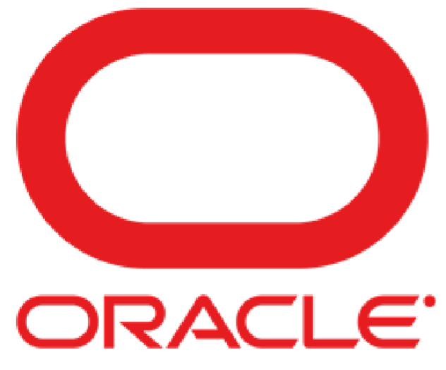

HOME
ABOUT
PROJECTS
CONTACT
데이터 멀티 태스커 포트폴리오
DRI Mind-set Data Analyst
데이터 흐름을 파악하고 프로세스를 점검하고 목적을 파악합니다
반복적인 업무는 자동화하고, 프로세스를 보다 효율적으로 개선하는 것에 강점이 있습니다.
다양한 분야의 프로젝트 경험을 바탕으로 유연하고 빠른 적응력을 갖췄습니다.
SKILLS

hi
hi